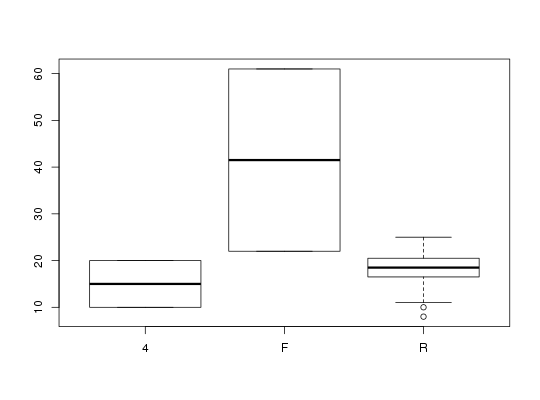

Fuel efficiency ratings for two-seater vehicles in 2001
Data for Exercise 5.8
Epatwoseater
Format
A data frame/tibble with 36 observations on the following 10 variables.
- class
a character variable with values
TWO SEATERS- manufacturer
a character variable with values
ACURAAUDIBMWCHEVROLETDODGEFERRARIHONDALAMBORGHINIMAZDAMERCEDES-BENZPLYMOUTHPORSCHETOYOTA- carline
a character variable with values
BOXSTERBOXSTER SCORVETTEDB132/144 DIABLOFERRARI 360 MODENA/SPIDERFERRARI 550 MARANELLO/BARCHETTAINSIGHTMR2MX-5 MIATANSXPROWLERS2000SL500SL600SLK230 KOMPRESSORSLK320TT ROADSTERTT ROADSTER QUATTROVIPER CONVERTIBLEVIPER COUPEZ3 COUPEZ3 ROADSTERZ8- displ
a numeric vector
- cyl
a numeric vector
- trans
a factor with levels
Auto(L4)Auto(L5)Auto(S4)Auto(S5)Auto(S6)Manual(M5)Manual(M6)- drv
a factor with levels
4FR- cty
a numeric vector
- hwy
a numeric vector
- cmb
a numeric vector
References
Kitchens, L. J. (2003) Basic Statistics and Data Analysis. Duxbury
Examples
summary(Epatwoseater$cty)#> Min. 1st Qu. Median Mean 3rd Qu. Max. #> 8.00 16.75 19.00 18.86 21.00 61.00plot(hwy ~ cty, data = Epatwoseater)boxplot(cty ~ drv, data = Epatwoseater)